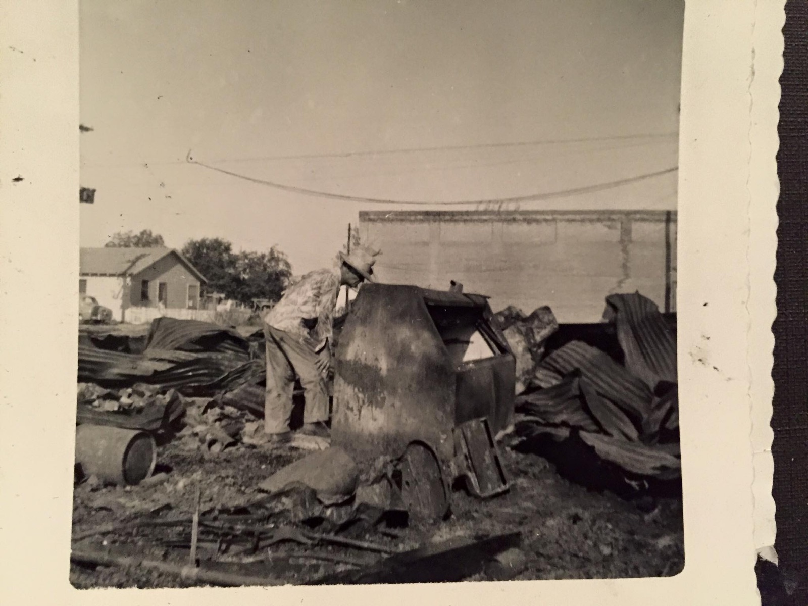
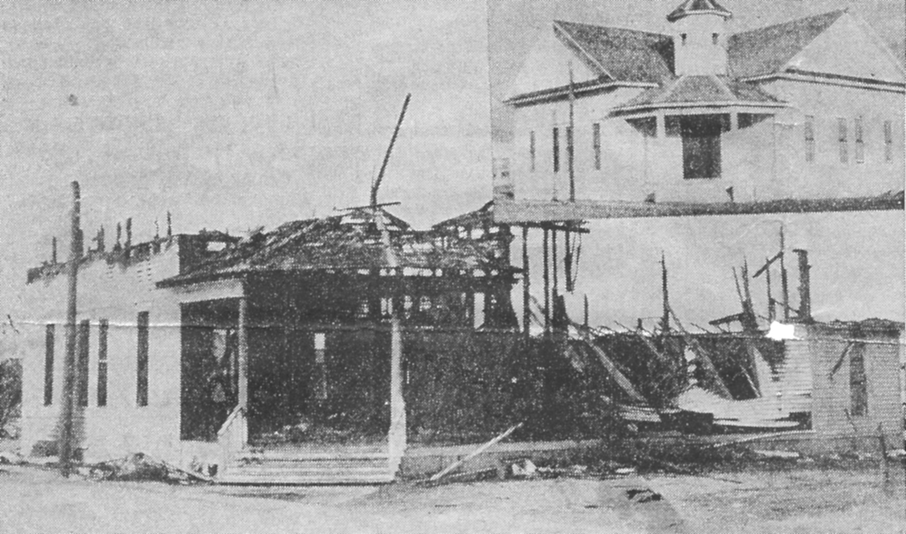
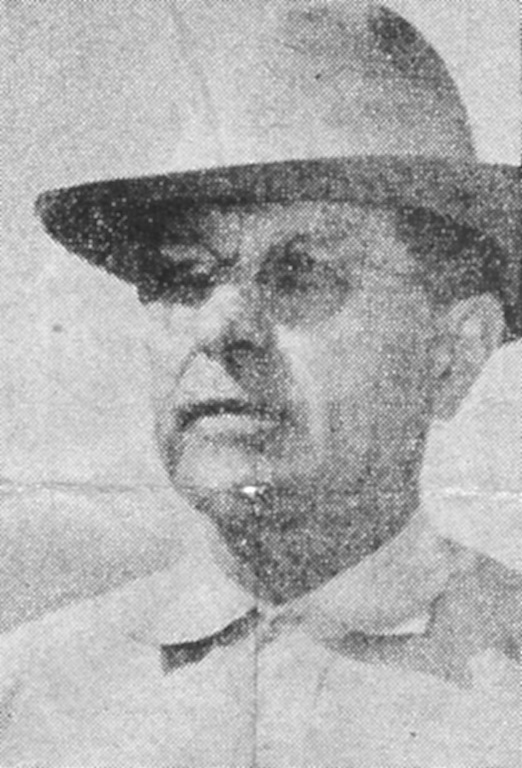

.jpg)
It began around 4:30 in the morning.
The fire in downtown Savoy in 1954 started before most of the town was awake. By the time anyone could respond, it had already taken hold of the Large Brothers Grocery. Then the Savoy Masonic Lodge. Then the garage. Three buildings, a Saturday morning, twenty thousand dollars in losses, and the particular silence of a town standing in front of something that cannot be undone.

The fire photographs in this archive are extraordinary documents. Shot in the immediacy of the event — smoke still visible, walls standing at angles that defy expectation, the debris that a fire leaves when it is done taking things — they record not just destruction but the specific texture of destruction in a small town, where every building is known and every loss is personal. There is a difference between a photograph of a burning building and a photograph of a burning building that your father used to take you into on Saturday afternoons. The archive holds the latter kind.

Mayor S.A. Bibby was photographed in the aftermath — a formal portrait, steady expression, the look of a man who has recently presided over something difficult and is holding the town together with the force of his composure. That is what mayors of small towns are asked to do in the moments when no policy document helps: to be steady, to be present, to be the visible proof that the community will continue.

Nine separate newspaper clippings in the archive document the 1954 fire — evidence that even a small town's disasters leave a paper trail long enough to teach you something.
The Church of Christ also burned in 1954. It was a hard year.
The town rebuilt, as it always had. A new City Hall and Fire Station were up by 1956. The Church of Christ was rebuilt. Savoy moved on, as small towns do, by continuing to exist.

But the photographs remain. And the nine newspaper clippings. And the particular knowledge that the town has been through this before — that in 1880, when the cyclone came through and demolished every business but one, the town rebuilt then too. Savoy has a long practice of rebuilding. By 1954 it was already an old skill.
All Tales